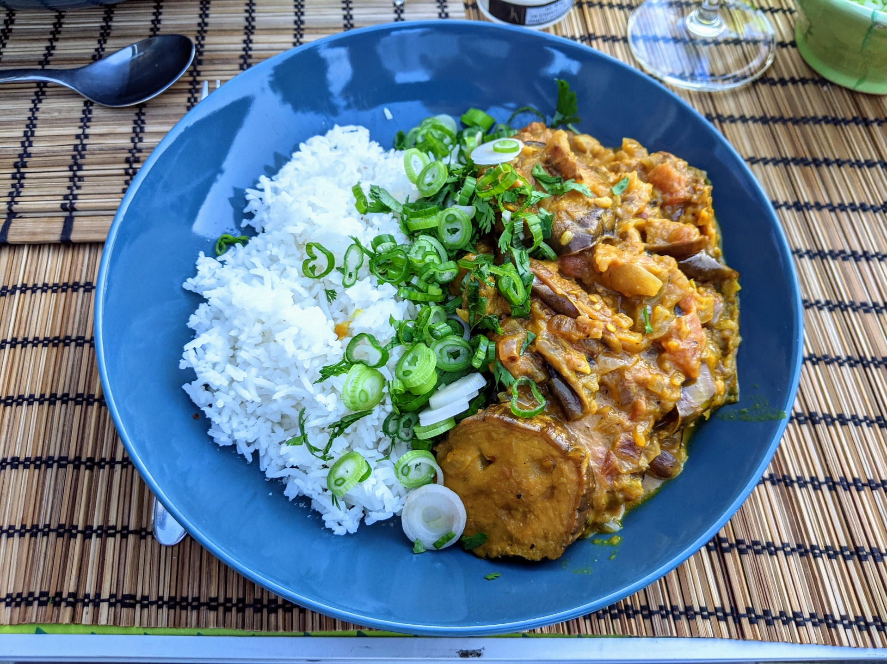

Curry d'aubergines rôties

Pour 4 personnes :
- Un peu moins d'un kilo d'aubergines
- Trois oignons
- Trois gousses d'ail
- Une boîte (400g) de tomates concassées
- Un demi-litre de lait de coco
- Une cuillère à café de garam masala
- Une cuillère à café de coriandre en poudre
- Une cuillère à café de curcuma
- Quelques branches de coriandre fraîche
- Un petit oignon frais
- Sel, poivre, huile d'olive, beurre
- Faire chauffer le four à 180°C en chaleur tournante. Laver, sécher, et couper les aubergines en tronçons de 1-2cm.
- Verser une quantité généreuse d'huile d'olive sur une plaque de four, puis y disposer les aubergines. Saler, poivrer, arroser d'huile d'olive, enfourner vers le haut du four jusqu'à ce que ça prenne une jolie couleur brune (une vingtaine de minutes environ).
- Pendant ce temps, éplucher et couper les oignons en bouts fins. Les faire revenir dans une casserole avec de l'huile d'olive, du beurre, et les épices.
- Pendant ce temps, éplucher et écraser l'ail, et l'ajouter lorsque les oignons commencent à fondre. Faire bien réduire, en mélangeant et si besoin en ajoutant un peu d'eau au fond pour éviter que ça attache.
- Lorsque les aubergines sont jolies, les sortir du four, couper chaque tranche en deux, et les ajouter dans la casserole avec les tomates concassées et le lait de coco.
- Porter à ébullition, puis faire mijoter à feu doux et à couvert une bonne vingtaine de minutes, en enlevant le couvercle vers la fin.
- Émincer la coriandre et l'oignon frais, et en parsemer le curry juste avant de le servir.
Retour à la liste des recettes